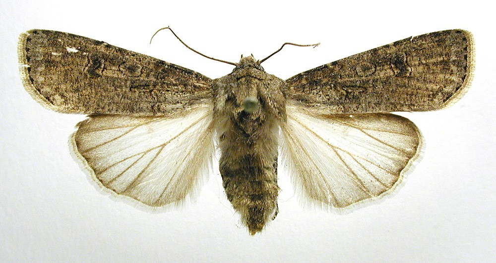
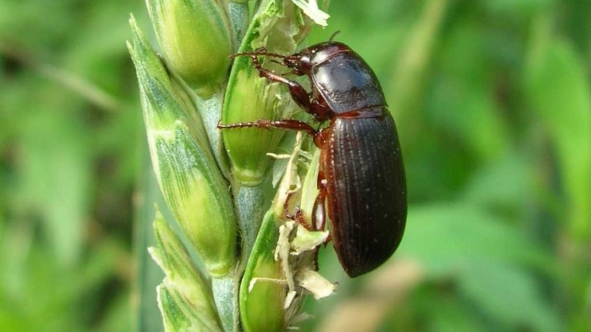
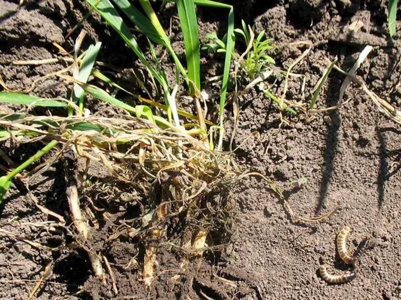
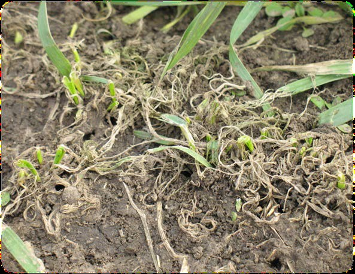
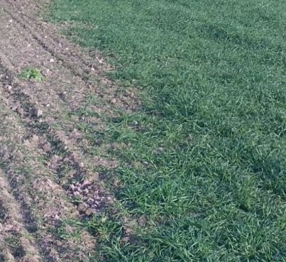
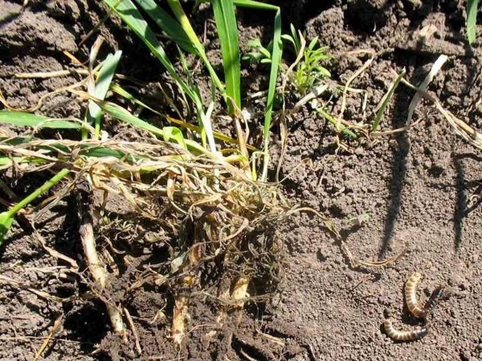
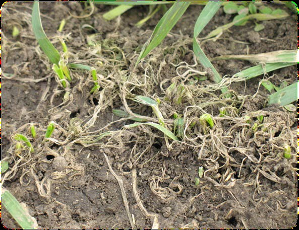
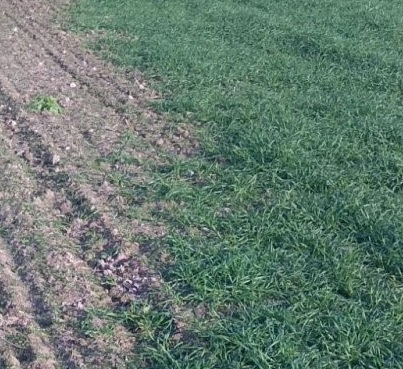

Вредители Пшеницы
Злаковые тли (fam. Aphididae)

Описание:
Имаго злаковых тлей имеют размер тела от 2,5 до 3,0 мм, цвет - зелёный (различные оттенки), некоторые особи имеют маленькие прозрачные крылья (самки-расселительницы).
Стадии развития:
У тлей, зимующей стадией является яйцо, откладываемое самкой осенью на растения озимых колосовых культур или злаковые сорняки. Весной из яиц развиваются личинки тлей, которые становятся самками-основательницами. Тли после зимовки питаются сначала на озимых, а затем на яровых культурах. Самки-основательницы партеногенетически (путём живорождения) производят только самок (крылатых-расселительниц и бескрылых тлей). Последнее поколение(август-сентябрь) - самки-полоноски, производят как самок, так и самцов. После спаривания откладывают яйца (для перезимовки) на различные злаковые растения. За один год может развиваться до 30 поколений злаковых тлей. Заселяют листья злаков крупными колониями, часто разные виды тлей питаются в одном месте.
Повреждения:
Сильно вредят всем зерновым колосовым культурам. Насекомые высасывают сок из листьев и стеблей, в повреждённых местах растени теряют цвет, желтеют или даже краснеют кончики листьев, а края иногда скручиваются. Вредоносность выше при низкой влажности. Повреждённые насекомыми растения увядают, а в случае высокой численности вредителя и вовсе погибают.Кроме прямого вреда злаковая тля имеет и косвенную вредоносность, являясь переносчиками множества болезней вирусной этиологии, в частности, желтой и бледно-зеленой карликовости пшеницы и чменя, различных видов мозаек пшеницы и других заболеваний. При среднем развитии потери могут достигать 4-5 ц/га, а при массовом развитии может привести к гибели всего урожая.
Меры борьбы:
Поскольку яйца тлей зимуют как на культурных растениях, так и на сорных, борьба с этим вредителем затруднена. Наиболее действенные меры - это уничтожение сорных растений и инсектицидные обработки. Экономический порог вредоносности:- выход в трубку - 10 тлей на стебель, колошение 5-10 тлей на колос при 50% заселенных колосьев - цветение – формирование зерна 10-20 тлей на колос при 60-80% заселенных колосьев - молочная спелость - 20-30 тлей на колос при сплошном заселении.


Озимая совка (Agrotis segetum)
Описание:
Длина тела имаго 18-22 мм, размах крыльев 30-46 мм. Передние крылья у самок желтовато-серые, бурые или почти черные, тонкая черная кайма окружает круглое, почковидное и клиновидное пятна.Плодовитость самок от 470 до 2200 яиц. Продолжительность жизни самок от 5 до 25 дней, максимально 40 дней, зависит от наличия корма - цветущих сорных растений. Гусеницы озимой совки очень прожорливы Зимуют гусеницы, переносят температуры до –11 °С, а при низкой влажности и до –18 °С.
Стадии развития:
Гусеницы первого поколения развиваются также на необрабатываемых участках. Младшие и средние возраста, не закончившие питание, физиологически не подготовлены к зимовке и не способны перенести температуру ниже –5 °С. Они остаются в верхнем слое почвы и гибнут поздней осенью или в начале зимы.
Повреждения:
.
Меры борьбы:
Агротехнические методы:зяблевая вспашка с оборотом пласта для уничтожения спящих в колыбельках гусениц, низких температур они не выносят; поверхностная обработка почвы: фрезование, культивация, междурядные обработки, для уничтожения куколок весной;соблюдение севооборота; уничтожение сорных растений и послеуборочных остатков. Экономический порог вредоносности на озимой пшенице на всходах 2-3 гусеницы на 1 м². Химические методы: Самым действенным способом является обработка семян протравителем.Биологические методы:Применение биопрепаратов (бактерии биоинсектицидов) Выпуск трихограммы в начале яйцекладки (30-50 тыс. особей на га) и при массовой яйцекладке.
Хлебная жужелица (Zabrus tenebrioides)
Описание:
Жук длиной 14-16 мм, смоляно-чёрный с бронзовым отливом.Опасный вредитель зерновых культур. Сильно повреждает пшеницу, ячмень, рожь. Из дикорастущих растений питается пыреем, мятликом, лисохвостом и другими злаковыми травами. Оптимальными условиями, способствующими увеличению численности хлебной жужелицы, являются сухаяи жаркая погода в летний период и продолжительная тёплая осень.
Стадии развития:
Зимуют личинки III возраста, реже I и II возрастов, на полях озимых злаков в почве на глубине 20-30ми. Нередко зимуют жуки, уже отложившие яйца, при этом они могу размножаться и на следующий год Весной при среднесуточной температуре около 9°С личинки поднимаются в верхние слои почвы и живут в норках, естественных трещинах и под комками почвы. Ночью они выходят на поверхность и питаются всходами злаковых культур, при этом могут затаскивать листья всходов в норки и питаться днём. Затем они окукливаются. Многие личинки могут, не возобновляя питания, окукливаться в местах где они зимовали. В первой декадк июня, появляются молодые жуки. Активный лёт отмечается при температуре 25-28°С и продолжается 20-25 дней. При наступлении жаркого периода жуки уходят в почву или поз укрытия и вступают в летнюю диапаузу. В августе жуки приступают к питанию, а в конце августа- начале сентября начинается откладка яиц. Жуки активны в сумерках и ночью.Самки откладывают яйца в почву на глубину 5-15 см. Средняя плодовитость самок 80-100 яиц. эмбриональное развитие в зависимости от температуры продолжается 10-18 дней.В конце августа - начале сентября из отложенных яиц появляются личинки, которые проходят в своём развитии три возраста. Осенью питание личинок, обычно в ноябре при понижении температуры до 0°С.
Повреждения:
Вредят жуки и личинки. Осенью и весной основновной вред причиняют личинки. На всходах озимых они обгрызают паренхиму листа, оставляя комок спутанных и изжеванных жилок. Повреждённые растения нередко погибают. При очаговом заселении посевов, растения погибают лишь частично, на незначительной площади Жуки вредят в фазах налива зерна и молочной спелости, выедают зёрна в колосьях, обгрызают чешуйки и ости, иногда объедают весь колос,измочаливая его. В результате у зерновых снижается урожай зерна.
Меры борьбы:
Строгое соблюдение севооборота, посев озимых злаков по пропашным предшественникам или чистым парам.Лущение стерни и глубокая ранняя зяблевая вспашка, приводящие к массовой гибели зимующих личинок вредителя. За 3-5 дней до посева проводят почвенные раскопки, при обнаружении более 0,5 жуков на кв.м, следует провести обработку семян одним из инсектицидов разрешённых на культуре. На протяжении периода вегетации следует постоянно обследовать посевы, и при выявлении свежих повреждений, с численностью более 1,0 экз./м² - в фазе "шильца" и более 2-3 экз./м² - в фазе "третий лист" - "начало кущения", следует провести обработки, используя разрешённый инсектицид.
 




